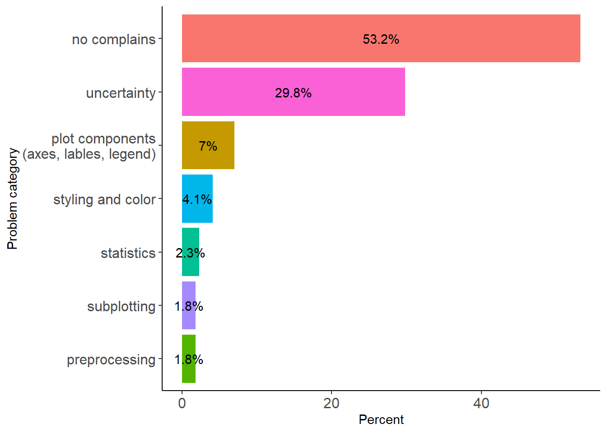

# upload to the git
library(readxl)
library(foreach)
library(stringr)
library(dplyr)
library(tokenizers)
library(data.table)
library(ggplot2)
library(plyr)
library(quanteda)
library(SemNetCleaner)
library(purrr)
library(tidytext)
library(tm)
library(topicmodels)
library(SnowballC)
library(Matrix)
library(text2vec)
library(tidyr)
library(kableExtra)
library(stringi)
library("xlsx")
library(padr)3.plot_breakdown
Setup
data <- read_excel("data/results-survey3.xlsx")
data <- data[1:121] %>%
filter(.[[18]] !='Yes') # not analysed any EEG method
vec <- names(data[ , grepl( "How would you " , names(data))])word_preproc
word_preproc <- function(data, N){
# N = 69
stop_list = c("a", "an", "the", "wise", "like", "s", "plot", "plots")
tmp <- data %>% filter(!is.na(.[[N]])) %>% select(., N) %>%
dplyr::rename(words = !!names(.)[1]) %>% mutate(words = tolower(words)) %>%
mutate(words_prep = str_split(words, "\\s+")) %>%
mutate(words_prep = sapply(words_prep, function(x) paste(x[!x %in% stop_list], collapse = " "))) %>%
mutate(words_prep = stri_replace_all_regex(words_prep,
pattern=c(" \\(.*", ", or.*", " across.*", " with.*", " at.*", " by.*", " over.*", #" of.*",
" for.*", " per.*", " across.*", " accross.*", " between.*"),
replacement=c(''),
vectorize=FALSE)) %>%
mutate(words_prep = str_split(words_prep, "\\s+")) %>%
mutate(words_prep = sapply(words_prep, function(x) paste(x[!x %in% stop_list], collapse = " ")))
return(tmp)
}Plot naming
Those who named a plot somehow and those who failed to do that
plot_names <- c("line", "butterfly", "topo", "topo_map", "topo_array", "erp_img", "parallel", "channel_img")
na_table <- function(data, vec){
temp <- data.frame(1:10)
for (i in vec){
temp1 <- word_preproc(data, i) %>%
mutate(words = ifelse(str_detect(words, 'idea|sure|confus|aware|do not|why'), "NA", as.character(words))) %>%
mutate(words = ifelse(nchar(words)==0, NA, words)) %>%
table(.) %>%
data.frame(.) %>% filter(words != "NA") %>%
summarise(n = sum(Freq))
temp <- cbind(temp, temp1)
}
temp <- temp[2:length(temp)]
colnames(temp) <- plot_names
return(temp)
}
num_named <- na_table(data, vec)
slice(num_named, 1) %>%
gather(., plots, succeeded, `line`:`channel_img`, factor_key=TRUE) %>%
mutate(failed = nrow(data) - succeeded) %>%
gather(., res, score, succeeded:failed, factor_key=TRUE) %>%
ggplot(., aes(x = plots, y = score, fill = res)) +
geom_bar(position = "dodge", stat = "identity") +
labs(x = "Category", y = "Value", fill = "Group") +
theme_classic() + theme(axis.title.x=element_blank(), plot.title = element_text(hjust = 0.5)) +
geom_text(aes(label = score, group = res), position = position_dodge(width = .9), vjust = -0.2) +
ggtitle("Plot naming")
vec <- names(data[ , grepl( "Have you ever plotted " , names(data))])
do_vec <- function(vec, data, plot_names){
t1 <- table(data[vec[1]])
for (i in 2:length(vec)) {
t <- table(data[vec[i]])
t1 <- rbind(t1, t)
}
rownames(t1) <- plot_names #array(paste0("t_", 1:length(vec)))
return(t1)
}
tab <- do_vec(vec, data, plot_names) %>% data.frame() %>% tibble::rownames_to_column(., "plots") %>%
gather(., type, plotted, `N.A`:`Yes`, factor_key=TRUE) %>%
filter(type == "Yes") %>% dplyr::select(-type)
named <- slice(num_named, 1) %>%
gather(., plots, succeeded, `line`:`channel_img`, factor_key=TRUE)%>%
mutate(failed = nrow(data) - succeeded) %>%
dplyr::rename(named = succeeded) %>%
dplyr::select(-failed)
familiar <- data[61:68] %>% rename_at(vars(colnames(.)), ~ plot_names) %>%
mutate_at(vars(plot_names), function(., na.rm = FALSE) (x = ifelse(.=="Yes", 1, 0)))
mem_tab <- data.frame(rowSums(t(familiar))) %>% tibble::rownames_to_column(., "plot") %>%
rename_at(vars(colnames(.)), ~ c("plots", "recognized")) %>%
merge(., named) %>% left_join(., tab) Joining, by = "plots"mem_tab %>% #filter(plots != "parallel") %>%
gather(., type, score, recognized:plotted, factor_key=TRUE) %>%
ggplot(., aes(x = reorder(plots, -score), y = score, fill = type)) +
geom_bar(position = "dodge", stat = "identity") +
labs(x = "Plot type", y = "Number of users", fill = "Level of\nfamiliarity\nwith plot") +
theme_classic() + geom_text(aes(label = score, group = type), position = position_dodge(width = .9), vjust = -0.2) + theme(plot.title = element_text(hjust = 0.5)) +
ggtitle("Familiarity with plots")The most common names for each plot
1
n1 <- word_preproc(data, 69) %>%
mutate(type = case_when(
grepl("\\b(idea|sure|confus|aware|do not|know|why|remember)\\b", words_prep) == TRUE ~ "bad",
grepl("\\baverage(d)?\\b.*\\b(erp(s)?|ep|related)\\b|\\b(erp(s)?|ep|related)\\b.*\\baverage(d)?\\b", words_prep) == TRUE ~ "averaged erp",
grepl("\\bwave(form|forms)?\\b.*\\b(erp(s)?|ep|related)\\b|\\b(erp(s)?|ep|related)\\b.*\\bwave(form|forms)?\\b", words_prep) == TRUE ~ "erp wave(form)s",
grepl("\\btime(course|series|domain)?\\b.*\\b(erp(s)?|ep|related)\\b|\\b(erp(s)?|ep|related)\\b.*\\btime(course|series|domain)?\\b", words_prep) == TRUE ~ "erp timecourse (timeseries)",
grepl("\\b(erp(s)?|ep|related)\\b", words) == TRUE ~ "erp",
grepl("\\b(time|timeseries)\\b", words) == TRUE ~ "time series",
grepl("\\b(response(s)?)\\b", words) == TRUE ~ "response",
grepl("\\b(line|boundedline)\\b", words) == TRUE ~ "line",
grepl("\\b(single|singleplot)\\b", words) == TRUE ~ "single",
grepl("\\b(waveform(s)?)\\b", words) == TRUE ~ "waveform",
grepl("\\b(p300)\\b", words) == TRUE ~ "p300",
grepl("\\b(average)\\b", words) == TRUE ~ "average",
TRUE ~ '_other'
)) %>%# filter(type == "erp") %>% #View()
filter(!is.na(type), type != "bad") %>% dplyr::select(type) %>% table(.) %>%
data.frame(.) %>% arrange(desc(Freq)) %>%
rename_at(vars(colnames(.)), ~ c("Line plot", "n"))
n1 Line plot n
1 erp 74
2 averaged erp 30
3 _other 13
4 erp timecourse (timeseries) 12
5 erp wave(form)s 12
6 time series 9
7 average 5
8 single 5
9 line 4
10 response 4
11 p300 2
12 waveform 22
n2 <- word_preproc(data, 80) %>%
mutate(type = case_when(
grepl("\\b(idea|sure|confus|aware|do not|know|why|remember|unsure|confusing|mess)\\b", words_prep) == TRUE ~ "bad",
grepl("\\b(butterfly|bitterfly|buterfly|buttefly)\\b", words_prep) == TRUE ~ "butterfly",
grepl("\\b(spaghetti)\\b", words_prep) == TRUE ~ "spaghetti",
grepl("\\b(time|timeseries|timecourse)\\b", words_prep) == TRUE ~ "time series",
grepl("\\b(channel|single|singleplot|individual)\\b", words_prep) == TRUE ~ "single or individual channel erp",
grepl("\\b(channels|multichannel|multeple|multiple|multi|all|muti|electrodes)\\b", words_prep) == TRUE ~ "multichannel/electrode erp",
grepl("\\b(evoked)\\b", words_prep) == TRUE ~ "evoked responces",
grepl("\\b(erp(s)?|eprs|event-related)\\b", words_prep) == TRUE ~ "erp",
TRUE ~ '_other'
)) %>% #filter(type == "single or individual channel erp") %>% #View()
filter(!is.na(type), type != "bad") %>%
dplyr::select(type) %>% table(.) %>%
data.frame(.) %>% arrange(desc(Freq)) %>%
rename_at(vars(colnames(.)), ~ c("Butterfly_plot", "n"))
n2 Butterfly_plot n
1 butterfly 69
2 single or individual channel erp 19
3 erp 15
4 multichannel/electrode erp 15
5 time series 10
6 _other 7
7 evoked responces 3
8 spaghetti 23
n3 <- word_preproc(data, 85) %>%
mutate(type = case_when(
grepl("\\b(idea|sure|confus|aware|do not|know|why|remember|unsure|confusing|mess)\\b", words_prep) == TRUE ~ "bad",
grepl("\\b(topo|topoplot(s)?)\\b", words_prep) == TRUE ~ "topo(plot)",
grepl("\\b(topomap|topomape)\\b", words_prep) == TRUE ~ "topomap",
grepl("\\b(topograph(y|ic|ical|ies)|topgraphy|topograbphy)\\b", words_prep) == TRUE ~ "topography",
grepl("\\b(heat(map)?)\\b", words_prep) == TRUE ~ "heatmap",
grepl("\\b(map)\\b", words_prep) == TRUE ~ "scalp map",
grepl("\\b(distribution)\\b", words_prep) == TRUE ~ "scalp distribution",
TRUE ~ '_other'
)) %>%
dplyr::select(type) %>% table(.) %>%
data.frame(.) %>% arrange(desc(Freq)) %>%
rename_at(vars(colnames(.)), ~ c("Topoplot", "n"))
n3 Topoplot n
1 topography 68
2 topo(plot) 63
3 topomap 13
4 _other 8
5 scalp map 7
6 scalp distribution 5
7 heatmap 34
n4 <- word_preproc(data, 90) %>%
mutate(type = case_when(
grepl("\\b(idea|sure|confus|aware|do not|know|why|remember|unsure|confusing|mess|\\?|unclear)\\b", words_prep) == TRUE ~ "bad",
grepl("\\btopo(plot|plots)?\\b.*\\btime(course)?\\b|\\btime(course)?\\b.*\\btopo(plot|plots)?|timetopoplot\\b", words_prep) == TRUE ~ "time topo",
grepl("\\btopo(plot|plots)?\\b.*\\bseries\\b|\\bseries\\b.*\\btopo(plot|plots)?\\b", words_prep) == TRUE ~ "topo series",
grepl("\\b(topo(s)?|topoplot(s)?)\\b", words_prep) == TRUE ~ "topo",
grepl("\\b(topomap(s|e)|topomap)\\b", words_prep) == TRUE ~ "topomap",
grepl("\\btopograph(y|ic|ical|ies)\\b.*\\bmap(s)?\\b|\\bmap(s)?\\b.*\\btopograph(y|ic|ical|ies)\\b", words_prep) == TRUE ~ "topographical map",
grepl("\\btopograph(y|ic|ical|ies)\\b.*\\btime\\b|\\btime\\b.*\\btopograph(y|ic|ical|ies)\\b", words_prep) == TRUE ~ "time topography",
grepl("\\b(topograph(y|ic|ical|ies)|topgraphy|topograhy|topograbphy|topgraphies)\\b", words_prep) == TRUE ~ "topography",
grepl("\\b(heat(map)?)\\b", words_prep) == TRUE ~ "heatmap",
grepl("\\b(map(s)?)\\b", words_prep) == TRUE ~ "scalp map",
grepl("\\b(time(series)?|serie(s)?)\\b", words_prep) == TRUE ~ "time series",
grepl("\\b(distribution)\\b", words_prep) == TRUE ~ "scalp distribution",
TRUE ~ '_other'
)) %>% #View()
dplyr::select(type) %>% table(.) %>%
data.frame(.) %>% arrange(desc(Freq)) %>% filter(type != "bad") %>%
rename_at(vars(colnames(.)), ~ c("Topo map", "n"))
n4 Topo map n
1 topo 39
2 topography 36
3 time topo 24
4 topomap 13
5 time topography 12
6 topographical map 9
7 scalp map 8
8 _other 6
9 topo series 6
10 time series 5
11 heatmap 3
12 scalp distribution 35
n5 <- word_preproc(data, 97) %>%
mutate(type = case_when(
grepl("\\b(idea|sure|confus|aware|do not|know|why|remember|unsure|confusing|mess|\\?|unclear|-|ugly|don't|useless)\\b", words_prep) == TRUE ~ "bad",
grepl("\\btopograph(y|ic|ical|ies)?|toprgraphic\\b.*\\berp(s)?\\b|\\berp(s)?\\b.*\\btopograph(y|ic|ical|ies)?|toprgraphic\\b", words_prep) == TRUE ~ "topographic erp",
grepl("\\btopo(plot|plots)?\\b.*\\berp(s)?\\b|\\berp(s)?\\b.*\\btopo(plot|plots)?\\b", words_prep) == TRUE ~ "topo erp",
grepl("\\b(erp(s)?|eprs|event-related)\\b", words_prep) == TRUE ~ "erp",
grepl("\\b(multi(plot|channel|ploter|ploterp)|multi)\\b", words_prep) == TRUE ~ "multi or multichannel plot",
grepl("\\b(topo(s)?|topoplot(s)?)\\b", words_prep) == TRUE ~ "topo",
grepl("\\b(topograph(y|ic|ical|ies)?|topgraphy|topograhy|topograbphy|topgraphies)\\b", words_prep) == TRUE ~ "topography",
grepl("\\b(channel(s|plot)?)\\b", words_prep) == TRUE ~ "channel",
grepl("\\b(time(series)?|serie(s)?)\\b", words_prep) == TRUE ~ "time series",
grepl("\\b(scalp)\\b", words_prep) == TRUE ~ "scalp",
TRUE ~ '_other'
)) %>% #filter(type=="erp") %>% View()
dplyr::select(type) %>% table(.) %>%
data.frame(.) %>% arrange(desc(Freq)) %>% filter(type != "bad") %>%
rename_at(vars(colnames(.)), ~ c("Topo array", "n"))
n5 Topo array n
1 erp 54
2 topographic erp 29
3 multi or multichannel plot 17
4 _other 9
5 channel 6
6 topo erp 5
7 scalp 4
8 topo 4
9 time series 26
n6 <- word_preproc(data, 102) %>%
mutate(type = case_when(
grepl("\\b(idea|sure|confus|aware|do not|know|why|good|remember|unsure|confusing|mess|\\?|\\?\\?|unclear|-|ugly|don't|x|useless)\\b", words_prep) == TRUE ~ "bad",
grepl("\\bimage\\b.*\\berp(s)?\\b|\\berp(s)?\\b.*\\bimage|erpimage|image\\b", words_prep) == TRUE ~ "erp image",
grepl("\\bimage\\b.*\\bepoch(s)?\\b|\\bepoch(s)?\\b.*\\bimage\\b", words_prep) == TRUE ~ "epoch image",
grepl("\\b(raster(plot)?)\\b", words_prep) == TRUE ~ "raster",
grepl("\\b(waterfall)\\b", words_prep) == TRUE ~ "waterfall",
grepl("\\b(heat(map)?)\\b", words_prep) == TRUE ~ "heatmap",
grepl("\\b(sort(ed)?)\\b", words_prep) == TRUE ~ "sorted trials",
grepl("\\b(erp(s)?|eprs|ersp|event-related)\\b", words_prep) == TRUE ~ "erp",
grepl("\\b(voltage)\\b", words_prep) == TRUE ~ "voltage",
grepl("\\b(time(series)?|serie(s)?)\\b", words_prep) == TRUE ~ "time series or frequencies",
grepl("\\b(trial(s|wise)?|trialplot)\\b", words_prep) == TRUE ~ "trial or trial variations",
TRUE ~ '_other'
)) %>% #View()
dplyr::select(type) %>% table(.) %>%
data.frame(.) %>% arrange(desc(Freq)) %>% filter(type != "bad") %>%
rename_at(vars(colnames(.)), ~ c("ERP image", "n"))
n6 ERP image n
1 erp image 30
2 erp 12
3 _other 9
4 sorted trials 9
5 trial or trial variations 7
6 heatmap 6
7 raster 5
8 time series or frequencies 4
9 voltage 3
10 waterfall 27
n7 <- word_preproc(data, 107) %>%
mutate(type = case_when(
grepl("\\b(idea|sure|confus|aware|do not|know|why|good|remember|unsure|confusing|mess|\\?|\\?\\?|unclear|-|ugly|don't|x|useless)\\b", words_prep) == TRUE ~ "bad",
grepl("\\b(amplitude(s)?)\\b", words_prep) == TRUE ~ "amplitudes",
TRUE ~ '_other'
)) %>% #View()
dplyr::select(type) %>% table(.) %>%
data.frame(.) %>% arrange(desc(Freq)) %>% filter(type != "bad") %>%
rename_at(vars(colnames(.)), ~ c("Parallel plot", "n"))
n7 Parallel plot n
1 amplitudes 48
n8 <- word_preproc(data, 112) %>%
mutate(type = case_when(
grepl("\\b(idea|sure|confus|aware|do not|know|why|good|remember|unsure|confusing|mess|normal|\\?|\\?\\?|unclear|recall|-|ugly|don't|x|useless|nan|clear)\\b", words_prep) == TRUE ~ "bad",
grepl("\\bimage\\b.*\\berp(s)?\\b|\\berp(s)?\\b.*\\bimage|erpimage\\b", words_prep) == TRUE ~ "erp image",
grepl("\\bimage\\b.*\\bchannel\\b|\\bchannel\\b.*\\bimage|chanimage|imagesc\\b", words_prep) == TRUE ~ "channel image",
grepl("\\b(heat(map)?)\\b", words_prep) == TRUE ~ "heatmap",
grepl("\\b(image)\\b", words_prep) == TRUE ~ "image",
grepl("\\b(raster(plot)?|custer)\\b", words_prep) == TRUE ~ "raster",
grepl("\\b(matrix)\\b", words_prep) == TRUE ~ "matrix",
grepl("\\b(channel(s|wise)?)\\b", words_prep) == TRUE ~ "channels",
grepl("\\b(erp(s)?|eprs|ersp|event-related)\\b", words_prep) == TRUE ~ "erp",
grepl("\\b(voltage)\\b", words_prep) == TRUE ~ "voltage",
# TRUE ~ '_other'
)) %>% #View()
dplyr::select(type) %>% table(.) %>%
data.frame(.) %>% arrange(desc(Freq)) %>% filter(type != "bad") %>%
rename_at(vars(colnames(.)), ~ c("Channel_image", "n"))
n8 Channel_image n
1 channels 10
2 erp 9
3 heatmap 8
4 erp image 7
5 voltage 6
6 image 5
7 raster 5
8 matrix 4
9 channel image 3n8 %>% ggplot(data = ., aes(y = reorder(Channel_image, n), x= n, fill = Channel_image)) +
geom_bar(stat="identity") + ylab("Channel plot") +
geom_text(aes(label = n),
hjust = -0.2) + theme_classic() + theme(legend.position="none")
Combined
list(n1, n2, n3, n4, n5, n6, n8) %>% kable(.) %>% kable_styling("striped", position = "center",)
|
|
|
|
|
|
|
Struggles with plots
vec <- names(data[ , grepl( ".*Which parts of*." , names(data))])
which(names(data) %in% vec)[1] 72 83 88 93 100 105 110 115word_preproc_tool_2 <- function(data, N, lim){
#lim = 10
tmp <- data %>% dplyr::select(N, N+1, N+2) %>% dplyr::rename(soft = !!names(.)[1], parts = !!names(.)[2], new_feature = !!names(.)[3]) %>%
filter(!is.na(soft)) %>%
mutate_at(vars(colnames(.)), funs(tolower(.))) %>%
mutate(soft = str_replace(soft, 'own', "custom"),
soft = str_replace(soft, '(matlab)', "matlab"),
soft = case_when(
str_detect(soft, 'brain vision') ~ "brain vision analyser",
#str_detect(soft, 'matlab|bar.m|boundedline') ~ "custom matlab",
str_detect(soft, 'mne') ~ "mne",
TRUE ~ as.character(soft)
),
parts = case_when(
str_detect(parts, 'none|n/a|nope|na|idk|nothing|sure|know|can\'t|don\'t|easy') ~ "-",
TRUE ~ as.character(parts)
),
new_feature = case_when(
str_detect(new_feature, 'none|n/a|nope|na|idk|nothing|sure|know|can\'t|don\'t') ~ "-",
TRUE ~ as.character(new_feature)
)) %>%
filter_at(vars(parts, new_feature), all_vars(!is.na(.))) %>% mutate(n = lengths(gregexpr("\\W+", soft)) + 1) %>%
filter(parts != "-" | new_feature != "-", n < lim) %>% dplyr::select(-4) %>% arrange(soft)
return(tmp)
}1
struggle1 <- word_preproc_tool_2(data, 71, 10)
separated_row <- separate_rows(struggle1[98, ], parts, sep = ",|\\.") %>% dplyr::select(parts)
tmp <- struggle1 %>% filter( parts != "-") %>% dplyr::select(parts) %>%
filter(!row_number() %in% c(2, 11, 40, 41, 69, 78, 83, 87, 89, 91)) %>%
separate_rows(parts, sep = "2\\)", convert = FALSE) %>%
separate_rows(parts, sep = "\\\r\\\n", convert = FALSE) %>% rbind(., separated_row) %>%
mutate(problems = case_when(
grepl("\\b(ci|se|sem|errorbar(s)?|sme|sd|uncertainty|error(s)?|confidence|variance|deviation(s)?|shading|shaded|bars|transparency)\\b", parts) == TRUE ~ "uncertainty",
grepl("\\b(axes|lable(s)?|label(s)?|legend|ticks)\\b", parts) == TRUE ~ "plot components\n(axes, lables, legend)",
grepl("\\b(color(s)?|colour(s)?|proportion(s)?|publication|scal(e|ing))\\b", parts) == TRUE ~ "styling and color",
grepl("\\b(preprocessing|extracting|datatype)\\b", parts) == TRUE ~ "preprocessing",
grepl("\\b(syncronisation|organizing|groups)\\b", parts) == TRUE ~ "subplotting",
grepl("\\b(mean|significan(t|ce)|permutations|combine)\\b", parts) == TRUE ~ "statistics",
)) %>% filter(nchar(parts) != 0) %>% filter(!is.na(problems))
n_rest <- mem_tab[4, 3] - nrow(tmp)
tmp1 <- tmp %>% group_by(problems) %>%
dplyr::summarise(n = n()) %>%
rbind(c("no complains", as.numeric(n_rest))) %>%
mutate(n = as.numeric(n)) %>%
mutate(percent = round(n / sum(n), 3) * 100 ,percent1 = round(n / sum(n), 2) * 100)
tmp1 %>%
arrange(desc(n)) %>%
kable(escape = F, booktabs = T) %>% kable_styling("striped", position = "center",) %>%
kable_classic(full_width = F, html_font = "Arial")| problems | n | percent | percent1 |
|---|---|---|---|
| no complains | 91 | 53.2 | 53 |
| uncertainty | 51 | 29.8 | 30 |
| plot components (axes, lables, legend) | 12 | 7.0 | 7 |
| styling and color | 7 | 4.1 | 4 |
| statistics | 4 | 2.3 | 2 |
| preprocessing | 3 | 1.8 | 2 |
| subplotting | 3 | 1.8 | 2 |
# words = ifelse(nchar(words)==0, NA, words),
# write.xlsx(., "data/struggles.xlsx", sheetName = "line plot", col.names = TRUE, row.names = TRUE, append = FALSE)
# problems: n of problems is higher than number of rows tmp1 %>%
arrange(desc(n)) %>%
ggplot(., aes(y = reorder(problems, percent), x = percent, fill = problems)) +
geom_col() +
geom_text(aes(label = paste0(percent, "%"), y = problems, x = percent),
position = position_stack(vjust = 0.5), color = "black") +
labs(x = "Percent", y = "Problem category") +
theme_classic() +
theme(axis.text = element_text(size = 12), legend.position = "none")
2
struggle2 <- word_preproc_tool_2(data, 82, 10)
#separated_row <- separate_rows(struggle1[98, ], parts, sep = ",|\\.") %>% dplyr::select(parts)
tmp <- struggle2 %>% filter( parts != "-") %>% dplyr::select(parts) %>%
filter(!row_number() %in% c(18, 31)) %>%
#separate_rows(parts, sep = "2\\)", convert = FALSE) %>%
#separate_rows(parts, sep = "\\\r\\\n", convert = FALSE) %>% rbind(., separated_row) %>%
mutate(problems = case_when(
grepl("\\b(ci|se|sem|errorbar(s)?|sme|sd|uncertainty|error(s)?|confidence|variance|deviation(s)?|shading|shaded|bars|transparency)\\b", parts) == TRUE ~ "uncertainty",
grepl("\\b(ax(is|es)?|lable(s)?|label(s)?|legend|ticks)\\b", parts) == TRUE ~ "plot components\n(axes, lables, legend)",
grepl("\\b(color(s|ing)?|colour(s)?|proportion(s)?|publication|neg|scal(e|ing))\\b", parts) == TRUE ~ "styling and color",
grepl("\\btopo\\w*", parts) == TRUE ~ "adding topography",
grepl("\\b(channel(s)?|electrodes(s)?|interpretable|read|remembering)\\b", parts) == TRUE ~ "channel selection\n(differentiation, identification)"
)) %>% filter(nchar(parts) != 0) %>% filter(!is.na(problems))
n_rest <- mem_tab[1, 3] - nrow(tmp)
tmp1 <- tmp %>% group_by(problems) %>%
dplyr::summarise(n = n()) %>%
rbind(c("no complains", as.numeric(n_rest))) %>%
mutate(n = as.numeric(n)) %>%
mutate(percent = round(n / sum(n), 3) * 100 ,percent1 = round(n / sum(n), 2) * 100)
tmp1 %>%
arrange(desc(n)) %>%
kable(escape = F, booktabs = T) %>% kable_styling("striped", position = "center",) %>%
kable_classic(full_width = F, html_font = "Arial")| problems | n | percent | percent1 |
|---|---|---|---|
| no complains | 107 | 76.4 | 76 |
| styling and color | 14 | 10.0 | 10 |
| channel selection (differentiation, identification) | 11 | 7.9 | 8 |
| adding topography | 5 | 3.6 | 4 |
| plot components (axes, lables, legend) | 2 | 1.4 | 1 |
| uncertainty | 1 | 0.7 | 1 |
# words = ifelse(nchar(words)==0, NA, words),
#write.xlsx(tmp, "data/struggles.xlsx", sheetName = "line plot", col.names = TRUE, row.names = TRUE, append = FALSE)
# problems: n of problems is higher than number of rows tmp1 %>%
arrange(desc(n)) %>%
ggplot(., aes(y = reorder(problems, percent), x = percent, fill = problems)) +
geom_col() +
geom_text(aes(label = paste0(percent, "%"), y = problems, x = percent),
position = position_stack(vjust = 0.5), color = "black") +
labs(x = "Percent", y = "Problem category") +
theme_classic() +
theme(axis.text = element_text(size = 12), legend.position = "none")3
struggle3 <- word_preproc_tool_2(data, 87, 10)
#separated_row <- separate_rows(struggle1[98, ], parts, sep = ",|\\.") %>% dplyr::select(parts)
tmp <- struggle3 %>% filter( parts != "-") %>% dplyr::select(parts) %>%
filter(!row_number() %in% c(5, 7, 16, 18, 43, 50)) %>%
separate_rows(parts, sep = ";", convert = FALSE) %>% filter(nchar(parts) != 0) %>%
filter(!row_number() %in% c(59)) %>%
#separate_rows(parts, sep = "\\\r\\\n", convert = FALSE) %>% rbind(., separated_row) %>%
mutate(problems = case_when(
grepl("\\b(head|headshape|montage|topographies)\\b", parts) == TRUE ~ "head shape and montage",
grepl("\\b(time|threshold)\\b", parts) == TRUE ~ "time selection",
grepl("\\b(ci|se|sem|errorbar(s)?|sme|sd|uncertainty|error(s)?|confidence|variance|deviation(s)?|shading|shaded|bars|transparency)\\b", parts) == TRUE ~ "uncertainty",
grepl("\\b(channel(s)?|electrode(s)?|sensors|elec)\\b", parts) == TRUE ~ "channel selection\n(differentiation, identification)",
grepl("\\b(color(s|ing|bar|map)?|colour(s)?|proportion(s)?|publication|limits|neg|scal(e|ing|es))\\b", parts) == TRUE ~ "styling and color",
grepl("\\b(ax(is|es)?|lable(s)?|label(s|ing)?|legend|ticks|features|layout)\\b", parts) == TRUE ~ "plot components\n(axes, lables, legend)",
grepl("\\b(mean|significan(t|ce)|permutations|p-value(s)?|smoothing|statistical|stats)\\b", parts) == TRUE ~ "statistics",
grepl("\\b(interpolat(e|ion)?|edges)\\b", parts) == TRUE ~ "interpolation",
# grepl("\\btopo\\w*", parts) == TRUE ~ "adding topography",
)) %>% #filter(is.na(problems)) %>% View()
filter(nchar(parts) != 0) %>% filter(!is.na(problems))
n_rest <- mem_tab[6, 3] - nrow(tmp)
tmp1 <- tmp %>% group_by(problems) %>%
dplyr::summarise(n = n()) %>%
rbind(c("no complains", as.numeric(n_rest))) %>%
mutate(n = as.numeric(n)) %>%
mutate(percent = round(n / sum(n), 3) * 100 ,percent1 = round(n / sum(n), 2) * 100)
tmp1 %>%
arrange(desc(n)) %>%
kable(escape = F, booktabs = T) %>% kable_styling("striped", position = "center",) %>%
kable_classic(full_width = F, html_font = "Arial")| problems | n | percent | percent1 |
|---|---|---|---|
| no complains | 106 | 63.9 | 64 |
| channel selection (differentiation, identification) | 19 | 11.4 | 11 |
| styling and color | 14 | 8.4 | 8 |
| head shape and montage | 11 | 6.6 | 7 |
| time selection | 6 | 3.6 | 4 |
| plot components (axes, lables, legend) | 4 | 2.4 | 2 |
| interpolation | 3 | 1.8 | 2 |
| statistics | 3 | 1.8 | 2 |
# words = ifelse(nchar(words)==0, NA, words),
#write.xlsx(tmp, "data/struggles.xlsx", sheetName = "line plot", col.names = TRUE, row.names = TRUE, append = FALSE)
# problems: n of problems is higher than number of rows tmp1 %>%
arrange(desc(n)) %>%
ggplot(., aes(y = reorder(problems, percent), x = percent, fill = problems)) +
geom_col() +
geom_text(aes(label = paste0(percent, "%"), y = problems, x = percent),
position = position_stack(vjust = 0.5), color = "black") +
labs(x = "Percent", y = "Problem category") +
theme_classic() +
theme(axis.text = element_text(size = 12), legend.position = "none")4
struggle4 <- word_preproc_tool_2(data, 92, 10)
#separated_row <- separate_rows(struggle1[98, ], parts, sep = ",|\\.") %>% dplyr::select(parts)
tmp <- struggle4 %>% filter( parts != "-") %>% dplyr::select(parts) %>%
filter(!grepl("\\b(no|okay)\\b", parts)) %>%
filter(!row_number() %in% c(17, 51, 12 )) %>%
separate_rows(parts, sep = ";", convert = FALSE) %>%
#filter(!row_number() %in% c(59)) %>%
#separate_rows(parts, sep = "\\\r\\\n", convert = FALSE) %>% rbind(., separated_row) %>%
mutate(problems = case_when(
grepl("\\b(head|headshape|montage|topographies|topoplots|shape)\\b", parts) == TRUE ~ "head shape and montage",
grepl("\\b(time(s|course)?|threshold)\\b", parts) == TRUE ~ "time selection",
grepl("\\b(ci|se|sem|errorbar(s)?|sme|sd|uncertainty|error(s)?|confidence|variance|deviation(s)?|shading|shaded|bars|transparency)\\b", parts) == TRUE ~ "uncertainty",
grepl("\\b(channel(s)?|electrode(s)?|sensors|elec)\\b", parts) == TRUE ~ "channel selection\n(differentiation, identification)",
grepl("\\b(color(s|ing|bar|map)?|colour(s)?|proportion(s)?|publication|limits|neg|scal(e|ing|es))\\b", parts) == TRUE ~ "styling and color",
grepl("\\b(ax(is|es)?|lable(s)?|label(s|ing)?|legend|ticks|features|markers|layout|specifications)\\b", parts) == TRUE ~ "plot components\n(axes, lables, legend)",
grepl("\\b(mean|significan(t|ce)|permutations|p-value(s)?|smoothing|statistical|stats|t-stat)\\b", parts) == TRUE ~ "statistics",
grepl("\\b(interpolat(e|ion)?|edges)\\b", parts) == TRUE ~ "interpolation",
TRUE ~ '_other'
)) %>% filter(nchar(parts) != 0) %>% filter(!is.na(problems))
n_rest <- mem_tab[8, 3] - nrow(tmp)
tmp1 <- tmp %>% group_by(problems) %>%
dplyr::summarise(n = n()) %>%
rbind(c("no complains", as.numeric(n_rest))) %>%
mutate(n = as.numeric(n)) %>%
mutate(percent = round(n / sum(n), 3) * 100 ,percent1 = round(n / sum(n), 2) * 100)
tmp1 %>%
arrange(desc(n)) %>%
kable(escape = F, booktabs = T) %>% kable_styling("striped", position = "center",) %>%
kable_classic(full_width = F, html_font = "Arial")| problems | n | percent | percent1 |
|---|---|---|---|
| no complains | 119 | 70.4 | 70 |
| time selection | 23 | 13.6 | 14 |
| styling and color | 11 | 6.5 | 7 |
| _other | 5 | 3.0 | 3 |
| channel selection (differentiation, identification) | 3 | 1.8 | 2 |
| head shape and montage | 3 | 1.8 | 2 |
| plot components (axes, lables, legend) | 3 | 1.8 | 2 |
| statistics | 2 | 1.2 | 1 |
# words = ifelse(nchar(words)==0, NA, words),
#write.xlsx(tmp, "data/struggles.xlsx", sheetName = "line plot", col.names = TRUE, row.names = TRUE, append = FALSE)
# problems: n of problems is higher than number of rows tmp1 %>%
arrange(desc(n)) %>%
ggplot(., aes(y = reorder(problems, percent), x = percent, fill = problems)) +
geom_col() +
geom_text(aes(label = paste0(percent, "%"), y = problems, x = percent),
position = position_stack(vjust = 0.5), color = "black") +
labs(x = "Percent", y = "Problem category") +
theme_classic() +
theme(axis.text = element_text(size = 12), legend.position = "none")5
struggle5 <- word_preproc_tool_2(data, 99, 10)
#separated_row <- separate_rows(struggle1[98, ], parts, sep = ",|\\.") %>% dplyr::select(parts)
tmp <- struggle5 %>% filter( parts != "-") %>% dplyr::select(parts) %>%
#filter(!grepl("\\b(no|okay)\\b", parts)) %>%
filter(!row_number() %in% c(33 )) %>%
separate_rows(parts, sep = ";", convert = FALSE) %>% #View()
#filter(!row_number() %in% c(59)) %>%
#separate_rows(parts, sep = "\\\r\\\n", convert = FALSE) %>% rbind(., separated_row) %>%
mutate(problems = case_when(
grepl("\\b(selecting|marking|spotting)\\b", parts) == TRUE ~ "channel selection\n(differentiation, identification)",
grepl("\\b(legible|readable|visible|small|datatype|shape|montage|subplots|size(s)?|channel(s)?|electrode(s)?|sensors)|scal(e|ing|es)|references\\b", parts) == TRUE ~ "legibility and scaling",
grepl("\\b(ci|se|sem|errorbar(s)?|sme|sd|uncertainty|error(s)?|confidence|variance|deviation(s)?|shading|shaded|bars|transparency)\\b", parts) == TRUE ~ "uncertainty",
grepl("\\b(color(s|ing|bar|map)?|colour(s)?|proportion(s)?|publication|limits|quality|scal(e|ing|es))\\b", parts) == TRUE ~ "publication quality and color",
grepl("\\b(ax(is|es)?|lable(s)?|label(s|ing)?|legend|ticks|edit|features|markers|layout|specifications)\\b", parts) == TRUE ~ "plot components\n(axes, lables, legend)",
grepl("\\b(preprocessing|extracting|masks)\\b", parts) == TRUE ~ "preprocessing",
TRUE ~ '_other'
)) %>% filter(nchar(parts) != 0) %>% filter(!is.na(problems)) #%>% View()
n_rest <- mem_tab[7, 3] - nrow(tmp)
tmp1 <- tmp %>% group_by(problems) %>%
dplyr::summarise(n = n()) %>%
rbind(c("no complains", as.numeric(n_rest))) %>%
mutate(n = as.numeric(n)) %>%
mutate(percent = round(n / sum(n), 3) * 100 ,percent1 = round(n / sum(n), 2) * 100)
tmp1 %>%
arrange(desc(n)) %>%
kable(escape = F, booktabs = T) %>% kable_styling("striped", position = "center",) %>%
kable_classic(full_width = F, html_font = "Arial")| problems | n | percent | percent1 |
|---|---|---|---|
| no complains | 101 | 68.2 | 68 |
| legibility and scaling | 31 | 20.9 | 21 |
| publication quality and color | 5 | 3.4 | 3 |
| plot components (axes, lables, legend) | 4 | 2.7 | 3 |
| channel selection (differentiation, identification) | 3 | 2.0 | 2 |
| preprocessing | 2 | 1.4 | 1 |
| uncertainty | 2 | 1.4 | 1 |
# words = ifelse(nchar(words)==0, NA, words),
#write.xlsx(tmp, "data/struggles.xlsx", sheetName = "line plot", col.names = TRUE, row.names = TRUE, append = FALSE)
# problems: n of problems is higher than number of rows tmp1 %>%
arrange(desc(n)) %>%
ggplot(., aes(y = reorder(problems, percent), x = percent, fill = problems)) +
geom_col() +
geom_text(aes(label = paste0(percent, "%"), y = problems, x = percent),
position = position_stack(vjust = 0.5), color = "black") +
labs(x = "Percent", y = "Problem category") +
theme_classic() +
theme(axis.text = element_text(size = 12), legend.position = "none")6
struggle6 <- word_preproc_tool_2(data, 104, 10)
#separated_row <- separate_rows(struggle1[98, ], parts, sep = ",|\\.") %>% dplyr::select(parts)
tmp <- struggle6 %>% filter( parts != "-") %>% dplyr::select(parts) %>%
filter(!grepl("\\b(x|ok)\\b", parts)) %>%
# filter(!row_number() %in% c(33 )) %>%
separate_rows(parts, sep = ";", convert = FALSE) %>% #View()
#filter(!row_number() %in% c(59)) %>%
#separate_rows(parts, sep = "\\\r\\\n", convert = FALSE) %>% rbind(., separated_row) %>%
mutate(problems = case_when(
grepl("\\b(sort(ing)?|max|correspondance)\\b", parts) == TRUE ~ "sorting",
grepl("\\b(smoothing)\\b", parts) == TRUE ~ "smoothing",
grepl("\\b(epochs|time)\\b", parts) == TRUE ~ "defining epochs",
grepl("\\b(color|paper)\\b", parts) == TRUE ~ "style",
TRUE ~ '_other'
)) %>% filter(nchar(parts) != 0) %>% filter(!is.na(problems)) #%>% View()
n_rest <- mem_tab[7, 3] - nrow(tmp)
tmp1 <- tmp %>% group_by(problems) %>%
dplyr::summarise(n = n()) %>%
rbind(c("no complains", as.numeric(n_rest))) %>%
mutate(n = as.numeric(n)) %>%
mutate(percent = round(n / sum(n), 3) * 100 ,percent1 = round(n / sum(n), 2) * 100)
tmp1 %>%
arrange(desc(n)) %>%
kable(escape = F, booktabs = T) %>% kable_styling("striped", position = "center",) %>%
kable_classic(full_width = F, html_font = "Arial")| problems | n | percent | percent1 |
|---|---|---|---|
| no complains | 133 | 89.9 | 90 |
| sorting | 6 | 4.1 | 4 |
| smoothing | 3 | 2.0 | 2 |
| _other | 2 | 1.4 | 1 |
| defining epochs | 2 | 1.4 | 1 |
| style | 2 | 1.4 | 1 |
# words = ifelse(nchar(words)==0, NA, words),
#write.xlsx(tmp, "data/struggles.xlsx", sheetName = "line plot", col.names = TRUE, row.names = TRUE, append = FALSE)
# problems: n of problems is higher than number of rows tmp1 %>%
arrange(desc(n)) %>%
ggplot(., aes(y = reorder(problems, percent), x = percent, fill = problems)) +
geom_col() +
geom_text(aes(label = paste0(percent, "%"), y = problems, x = percent),
position = position_stack(vjust = 0.5), color = "black") +
labs(x = "Percent", y = "Problem category") +
theme_classic() +
theme(axis.text = element_text(size = 12), legend.position = "none")8
struggle8 <- word_preproc_tool_2(data, 114, 10)
#separated_row <- separate_rows(struggle1[98, ], parts, sep = ",|\\.") %>% dplyr::select(parts)
tmp <- struggle8 %>% filter( parts != "-") %>% dplyr::select(parts) %>%
filter(!grepl("\\b(n|x|ok|dont)\\b", parts)) %>%
# filter(!row_number() %in% c(33 )) %>%
#separate_rows(parts, sep = ";", convert = FALSE) %>% #View()
#filter(!row_number() %in% c(59)) %>%
#separate_rows(parts, sep = "\\\r\\\n", convert = FALSE) %>% rbind(., separated_row) %>%
mutate(problems = case_when(
grepl("\\b(sort(ing)?|order(ing)?|organisation)\\b", parts) == TRUE ~ "order and sorting",
# grepl("\\b(smoothing)\\b", parts) == TRUE ~ "smoothing",
#grepl("\\b(epochs|time)\\b", parts) == TRUE ~ "defining epochs",
grepl("\\b(color(bar)?|paper)\\b", parts) == TRUE ~ "style",
TRUE ~ '_other'
)) %>% filter(nchar(parts) != 0) %>% filter(!is.na(problems))
n_rest <- mem_tab[2, 3] - nrow(tmp)
tmp1 <- tmp %>% group_by(problems) %>%
dplyr::summarise(n = n()) %>%
rbind(c("no complains", as.numeric(n_rest))) %>%
mutate(n = as.numeric(n)) %>%
mutate(percent = round(n / sum(n), 3) * 100 ,percent1 = round(n / sum(n), 2) * 100)
tmp1 %>%
arrange(desc(n)) %>%
kable(escape = F, booktabs = T) %>% kable_styling("striped", position = "center",) %>%
kable_classic(full_width = F, html_font = "Arial")| problems | n | percent | percent1 |
|---|---|---|---|
| no complains | 87 | 88.8 | 89 |
| order and sorting | 5 | 5.1 | 5 |
| _other | 3 | 3.1 | 3 |
| style | 3 | 3.1 | 3 |
# words = ifelse(nchar(words)==0, NA, words),
#write.xlsx(tmp, "data/struggles.xlsx", sheetName = "line plot", col.names = TRUE, row.names = TRUE, append = FALSE)
# problems: n of problems is higher than number of rows tmp1 %>%
arrange(desc(n)) %>%
ggplot(., aes(y = reorder(problems, percent), x = percent, fill = problems)) +
geom_col() +
geom_text(aes(label = paste0(percent, "%"), y = problems, x = percent),
position = position_stack(vjust = 0.5), color = "black") +
labs(x = "Percent", y = "Problem category") +
theme_classic() +
theme(axis.text = element_text(size = 12), legend.position = "none")